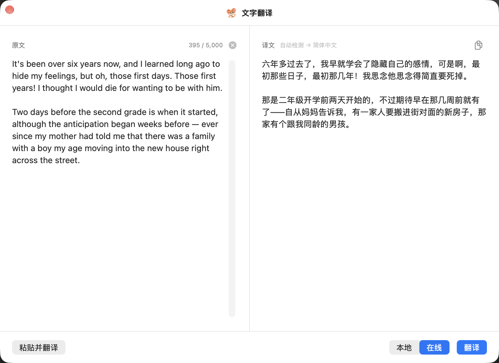
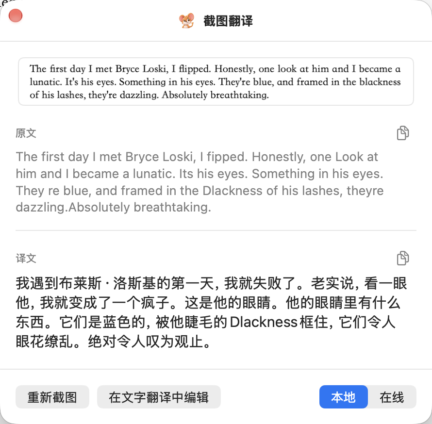

粘贴，继续翻译
粘贴、编辑英文，或将截图识别出的原文带入文字窗口继续处理。
⌥⌘T文字翻译


粘贴、编辑英文，或将截图识别出的原文带入文字窗口继续处理。
⌥⌘T文字翻译
点击上方“下载安装”，打开下载的 JerryTranslate-…-arm64.zip。
将 JerryTranslate.app 拖入“应用程序”文件夹，双击启动后，从菜单栏图标进入。
首次截图按系统提示授予屏幕录制权限；本地翻译按提示下载英语与简体中文资源。之后按快捷键即可翻译。
目前将英文译为简体中文。截图可识别英文与简体、繁体中文，已有中文原样保留。
默认不会。OCR 与本地翻译在设备上完成，不保存翻译历史；检查更新时也不携带截图、原文或译文。
在应用的设置中点击“打开屏幕录制设置”，确认已允许 JerryTranslate。如仍未生效，退出应用后重新打开。
在菜单栏图标的菜单中选择“检查更新…”，或在设置中开启每日自动检查。下载与安装都由你确认。
退出应用后，将“应用程序”文件夹中的 JerryTranslate 移到废纸篓。
没找到答案，或者遇到了问题？发邮件给作者
JerryTranslate 免费使用。觉得顺手的话，挑一块奶酪投喂作者。
用手机支付宝扫一扫长按保存收款码，再用支付宝“扫一扫”从相册选取
投喂不解锁任何功能，只解锁作者的好心情。想催更？告诉作者